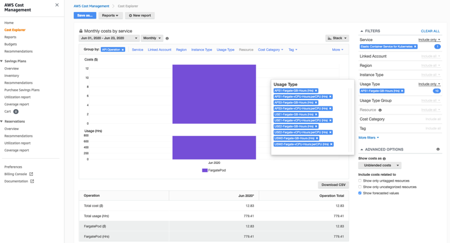
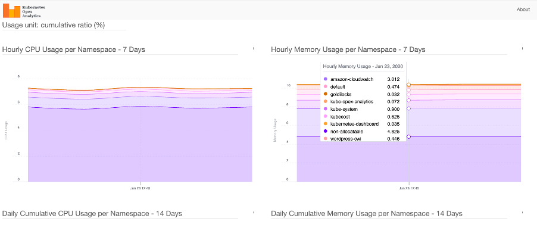

支出意識¶
支出意識是了解誰、在哪裡以及什麼導致您的 EKS 叢集中的支出。獲得此數據的準確圖像將有助於提高您的支出意識並突出需要補救的領域。
建議¶
使用成本探索器¶
AWS Cost Explorer 有一個易於使用的界面,可讓您可視化、了解和管理您隨時間推移的 AWS 成本和使用情況。您可以使用 Cost Explorer 中可用的篩選器分析成本和使用情況數據,並查看不同級別的成本。
EKS 控制平面和 EKS Fargate 成本¶
使用篩選器,我們可以查詢如下圖所示的 EKS 控制平面和 Fargate Pod 產生的成本:

使用篩選器,我們可以查詢 EKS 中 Fargate Pod 的總體成本 - 包括 vCPU 小時和 GB 小時,如下圖所示:

資源標記¶
Amazon EKS 支持添加 AWS 標籤到您的 Amazon EKS 叢集。這使得輕鬆控制對 EKS API 的訪問以管理您的叢集。添加到 EKS 叢集的標籤特定於 AWS EKS 叢集資源,它們不會傳播到叢集使用的其他 AWS 資源,如 EC2 實例或負載均衡器。目前,通過 AWS API、控制台和 SDK,支持為所有新的和現有的 EKS 叢集添加標籤。
AWS Fargate 是一項提供按需、大小合適的容器計算容量的技術。在您的叢集中調度 pod 之前,您必須定義至少一個 Fargate 配置文件,該配置文件指定哪些 pod 應在啟動時使用 Fargate。
添加和列出 EKS 叢集的標籤:
$ aws eks tag-resource --resource-arn arn:aws:eks:us-west-2:xxx:cluster/ekscluster1 --tags team=devops,env=staging,bu=cio,costcenter=1234
$ aws eks list-tags-for-resource --resource-arn arn:aws:eks:us-west-2:xxx:cluster/ekscluster1
{
"tags": {
"bu": "cio",
"env": "staging",
"costcenter": "1234",
"team": "devops"
}
}
標籤對 Amazon EKS 沒有任何語義含義,它們被嚴格解釋為一串字符。例如,您可以為您的 Amazon EKS 叢集定義一組標籤,以幫助您跟踪每個叢集的所有者和堆棧級別。
使用 AWS Trusted Advisor¶
AWS Trusted Advisor 提供了一套豐富的最佳實踐檢查和建議,涵蓋成本優化、安全性、容錯能力、性能和服務限制等五個類別。
對於成本優化,Trusted Advisor 可以消除未使用和閒置的資源,並建議做出預留容量的承諾。對於 Amazon EKS 最有幫助的行動項目將是低利用率的 EC2 實例、未關聯的彈性 IP 地址、閒置的負載均衡器、利用不足的 EBS 卷等。完整的檢查列表可在 https://aws.amazon.com/premiumsupport/technology/trusted-advisor/best-practice-checklist/ 找到。
Trusted Advisor 還為 EC2 實例和 Fargate 提供了節省計劃和預留實例的建議,這允許您承諾一致的使用量以換取折扣價格。
注意
Trusted Advisor 的建議是一般性建議,而不是特定於 EKS 的。
使用 Kubernetes 儀表板¶
Kubernetes 儀表板
Kubernetes 儀表板是一個通用的、基於 Web 的 Kubernetes 叢集 UI,它提供了有關 Kubernetes 叢集的信息,包括叢集、節點和 pod 級別的資源使用情況。在 Amazon EKS 叢集上部署 Kubernetes 儀表板的過程在 Amazon EKS 文檔中有描述。
儀表板提供了每個節點和 pod 的資源使用情況分解,以及 pod、服務、部署和其他 Kubernetes 對象的詳細元數據。這種綜合信息提供了對 Kubernetes 環境的可見性。

kubectl top 和 describe 命令
使用 kubectl top 和 kubectl describe 命令查看資源使用指標。kubectl top 將顯示您的叢集中 pod 或節點的當前 CPU 和內存使用情況,或特定 pod 或節點的使用情況。kubectl describe 命令將提供有關特定節點或 pod 的更詳細信息。
$ kubectl top pods
$ kubectl top nodes
$ kubectl top pod pod-name --namespace mynamespace --containers
使用 top 命令,輸出將顯示節點使用的 CPU (以核心為單位) 和內存 (以 MiB 為單位) 的總量,以及這些數字佔節點可分配容量的百分比。然後您可以通過添加 --containers 標誌深入到 pod 內的容器級別。
kubectl describe 返回每個資源請求或限制所佔總可用容量的百分比。
kubectl top 和 describe 跟踪 kubernetes pod、節點和容器的關鍵資源(如 CPU、內存和存儲)的利用率和可用性。這種意識將有助於了解資源使用情況並有助於控制成本。
使用 CloudWatch 容器洞察¶
使用 CloudWatch 容器洞察收集、聚合和總結您的容器化應用程序和微服務的指標和日誌。容器洞察適用於在 EC2 上運行的 Amazon Elastic Kubernetes Service,以及在 Amazon EC2 上運行的 Kubernetes 平台。指標包括 CPU、內存、磁盤和網絡的利用率。
洞察的安裝在文檔中給出。
CloudWatch 在集群、節點、pod、任務和服務級別創建聚合指標作為 CloudWatch 指標。
以下查詢顯示了按平均節點 CPU 利用率排序的節點列表
STATS avg(node_cpu_utilization) as avg_node_cpu_utilization by NodeName
| SORT avg_node_cpu_utilization DESC
按容器名稱的 CPU 使用情況
stats pct(container_cpu_usage_total, 50) as CPUPercMedian by kubernetes.container_name
| filter Type="Container"
stats floor(avg(container_filesystem_usage/1024)) as container_filesystem_usage_avg_kb by InstanceId, kubernetes.container_name, device
| filter Type="ContainerFS"
| sort container_filesystem_usage_avg_kb desc
更多示例查詢可在容器洞察文檔中找到
這種意識將有助於了解資源使用情況並有助於控制成本。
使用 KubeCost 進行支出意識和指導¶
第三方工具如 kubecost 也可以部署在 Amazon EKS 上,以獲得運行 Kubernetes 叢集的成本可見性。請參考此 AWS 博客以使用 Kubecost 跟踪成本
使用 Helm 3 部署 kubecost:
$ curl -sSL https://raw.githubusercontent.com/helm/helm/master/scripts/get-helm-3 | bash
$ helm version --short
v3.2.1+gfe51cd1
$ helm repo add stable https://kubernetes-charts.storage.googleapis.com/
$ helm repo add stable https://kubernetes-charts.storage.googleapis.com/c^C
$ kubectl create namespace kubecost
namespace/kubecost created
$ helm repo add kubecost https://kubecost.github.io/cost-analyzer/
"kubecost" has been added to your repositories
$ helm install kubecost kubecost/cost-analyzer --namespace kubecost --set kubecostToken="aGRoZEBqc2pzLmNvbQ==xm343yadf98"
NAME: kubecost
LAST DEPLOYED: Mon May 18 08:49:05 2020
NAMESPACE: kubecost
STATUS: deployed
REVISION: 1
TEST SUITE: None
NOTES:
--------------------------------------------------Kubecost has been successfully installed. When pods are Ready, you can enable port-forwarding with the following command:
kubectl port-forward --namespace kubecost deployment/kubecost-cost-analyzer 9090
Next, navigate to http://localhost:9090 in a web browser.
$ kubectl port-forward --namespace kubecost deployment/kubecost-cost-analyzer 9090
Note: If you are using Cloud 9 or have a need to forward it to a different port like 8080, issue the following command
$ kubectl port-forward --namespace kubecost deployment/kubecost-cost-analyzer 8080:9090
使用 Kubernetes 成本分配和容量規劃分析工具¶
Kubernetes Opex Analytics 是一個工具,可以幫助組織跟踪其 Kubernetes 叢集消耗的資源,以防止過度支付。為此,它生成了 7 天、14 天和 12 個月的使用報告,顯示了每個項目隨時間推移的支出情況。

Magalix Kubeadvisor¶
KubeAdvisor 持續掃描您的 Kubernetes 叢集,並報告您如何修復問題、應用最佳實踐和優化您的叢集(包括有關成本效率的 CPU/內存等資源的建議)。
Spot.io,以前稱為 Spotinst¶
Spotinst Ocean 是一項應用程序擴展服務。與 Amazon Elastic Compute Cloud (Amazon EC2) Auto Scaling 組類似,Spotinst Ocean 旨在通過利用 Spot 實例與按需和預留實例的組合來優化性能和成本。通過自動化 Spot 實例管理和各種實例大小的組合,Ocean 集群自動縮放器根據 pod 資源需求進行擴展。Spotinst Ocean 還包括一種預測算法,可以提前 15 分鐘預測 Spot 實例中斷,並在不同的 Spot 容量池中啟動一個新節點。
這可作為 AWS Quickstart 由 Spotinst, Inc. 與 AWS 合作開發。
EKS 研討會還有一個模塊介紹在 Amazon EKS 上優化工作節點管理,其中包括成本分配、正確調整和擴展策略等部分。
Yotascale¶
Yotascale 可以準確分配 Kubernetes 成本。Yotascale Kubernetes 成本分配功能利用實際成本數據(包括預留實例折扣和 spot 實例定價),而不是一般市場價格估算,來了解 Kubernetes 成本足跡的總體情況。
更多詳細信息可以在他們的網站上找到。
Alcide Advisor¶
Alcide 是 AWS 合作夥伴網絡 (APN) 高級技術合作夥伴。Alcide Advisor 有助於確保您的 Amazon EKS 叢集、節點和 pod 配置按照安全最佳實踐和內部指南進行調整。Alcide Advisor 是一種無代理的 Kubernetes 審核和合規服務,旨在確保無縫和安全的 DevSecOps 流程,通過在進入生產環境之前強化開發階段來實現這一目標。
更多詳細信息可以在這篇博客文章中找到。
其他工具¶
Kubernetes 垃圾收集¶
Kubernetes 垃圾收集器的作用是刪除那些曾經有所有者但現在沒有所有者的某些對象。
Fargate 計數¶
Fargatecount 是一個有用的工具,它允許 AWS 客戶通過自定義 CloudWatch 指標跟踪特定區域特定帳戶中部署在 Fargate 上的 EKS pod 的總數。這有助於跟踪 EKS 叢集中運行的所有 Fargate pod。
Kubernetes Ops View¶
Kube Ops View 是一個有用的工具,它為多個 Kubernetes 叢集提供了一個通用的操作視圖。

Popeye - A Kubernetes 叢集清潔器¶
Popeye - A Kubernetes 叢集清潔器是一個實用程序,它掃描活動的 Kubernetes 叢集並報告部署的資源和配置可能存在的問題。它基於部署的內容而不是存儲在磁盤上的內容來清理您的叢集。通過掃描您的叢集,它可以檢測到配置錯誤,並幫助您確保最佳實踐得到遵守。
資源¶
請參考以下資源,了解有關成本優化最佳實踐的更多信息。
文檔和博客 + Amazon EKS 支持標籤
工具 + 什麼是 AWS 帳單和成本管理? + Amazon CloudWatch 容器洞察 + 如何使用 Kubecost 跟踪多租戶 Amazon EKS 叢集的成本 + Kube Cost + Kube Opsview + Kube Janitor + Kubernetes Opex Analytics